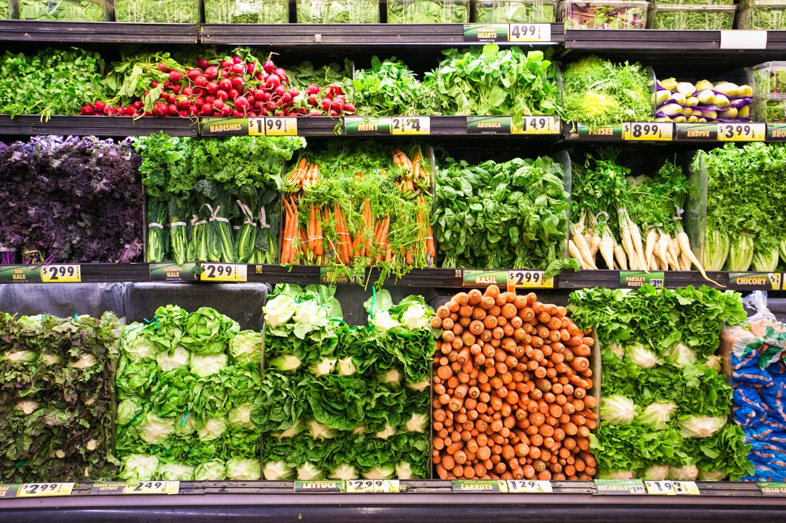

Cultivo de Plantas

Entrega e Transporte das Verduras

Verduras no Mercado
Cultivo de Plantas
Entrega e Transporte das Verduras
Verduras no Mercado
Veja Mais
Segurança alimentar: Garante a produção de alimentos de
forma contínua e sustentável, atendendo à demanda crescente da população mundial sem comprometer a
capacidade produtiva das futuras gerações. Preservação do meio ambiente: Minimiza os impactos negativos da agricultura no meio ambiente,
protegendo o solo, a água, a biodiversidade e combatendo as mudanças climáticas. Qualidade dos alimentos: Promove a produção de alimentos mais saudáveis, nutritivos e livres de
resíduos de agrotóxicos, beneficiando a saúde humana e contribuindo para uma melhor qualidade de vida. Desenvolvimento social: Gera renda e oportunidades de trabalho nas áreas rurais, contribuindo para
o
desenvolvimento das comunidades e a redução da pobreza. Competitividade do agronegócio: Aumenta a competitividade do agronegócio no mercado internacional,
valorizando a produção sustentável e atendendo à crescente demanda por produtos ecológicos e socialmente
responsáveis.
Acesso à informação e tecnologia: Nem todos os agricultores têm acesso à informação e
tecnologia necessárias para implementar práticas agrícolas sustentáveis, necessitando de investimentos
em capacitação, pesquisa e extensão rural. Financiamento: O acesso a crédito e financiamento para investir em práticas sustentáveis pode
ser um desafio para os agricultores, exigindo políticas públicas e incentivos adequados. Mudança de mentalidade: A transição para a agricultura sustentável exige uma mudança de
mentalidade e cultura entre os agricultores, consumidores e a sociedade em geral, reconhecendo a
importância da sustentabilidade e valorizando os produtos sustentáveis. Articulação entre diferentes setores: É fundamental a articulação entre diferentes setores da
sociedade, como governo, indústria, academia e ONGs, para promover a pesquisa, a difusão de
tecnologias e a implementação de políticas públicas que incentivem a agricultura sustentável. Complexidade e Diversidade: A agricultura é uma atividade complexa e diversificada, com
diferentes sistemas de produção, culturas, climas e realidades socioeconômicas. Essa diversidade torna
difícil a padronização de práticas sustentáveis e exige soluções adaptadas às especificidades de cada
contexto.
Benefícios:
Desafios:

Conservação do solo: Adoção de práticas que protegem a saúde do solo, como rotação de culturas, cobertura morta e manejo racional da irrigação, evitando a erosão, a perda de nutrientes e a desertificação.
Preservação da água: Uso eficiente da água na irrigação, minimizando o desperdício e buscando fontes alternativas, como a captação de água da chuva e o reúso de água tratada.
Biodiversidade: Conservação da biodiversidade no agroecossistema, promovendo a harmonia entre diferentes espécies de plantas, animais e microrganismos, que contribuem para o equilíbrio ecológico e a saúde do solo.
Bem-estar animal: Criação de animais com respeito ao seu bem-estar, garantindo condições adequadas de vida, alimentação e manejo, evitando o sofrimento e promovendo práticas que preservem a saúde animal.
Redução do uso de agrotóxicos: Busca por alternativas naturais ao controle de pragas e doenças, como o manejo integrado de pragas e doenças (MIP), que prioriza métodos biológicos e ecológicos, reduzindo o impacto ambiental e a contaminação dos alimentos.
Produção agroecológica: Adoção de práticas agroecológicas que imitam os processos naturais, promovendo a ciclagem de nutrientes, o controle natural de pragas e doenças e a diversificação das culturas, resultando em alimentos mais saudáveis e com menor impacto ambiental.
Comércio justo e agricultura familiar: Apoio à agricultura familiar e ao comércio justo, garantindo preços justos aos produtores rurais, valorizando a produção local e contribuindo para o desenvolvimento das comunidades rurais.
Conscientização e educação ambiental: Promoção da conscientização e da educação ambiental entre agricultores, consumidores e a sociedade em geral, disseminando informações sobre a importância da agricultura sustentável e incentivando práticas mais responsáveis.